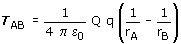
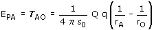
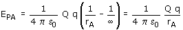
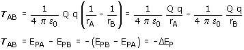

(En campo creado por cargas puntuales)
Trabajo
Sea una carga q que se mueve, sometida a la fuerza ejercida por otra carga Q, desde un punto A hasta otro B. El trabajo que realiza el campo eléctrico viene dado por:

Q |
Carga creadora del campo (Con signo) |
q |
Carga que se mueve (Con signo) |
rA |
Distancia del punto de partida a la carga Q |
|
rB |
Distancia del punto de llegada a la carga q |
Un trabajo positivo significa que la carga q sola realizará el des-plazamiento ganando velocidad. Un trabajo negativo significa que la carga q no realizará sola el desplazamiento, habrá que llevarla o lanzarla con velocidad suficiente.
Energía potencial
Se define energía potencial de una carga q colocada en un pun-to A, como el trabajo que hace el campo eléctrico cuando la carga q se desplaza desde el punto A hasta un punto O elegido arbitrariamente como origen de potencial.

Cuando se trabaja con cargas puntuales se toma como origen de potencial el punto del infinito

En la expresión de la energía potencial las cargas Q, q se ponen con signo
Importante
El trabajo del campo es igual a la variación de energía potencial cambiada de signo

Potencial
Se define potencial en un punto A de un campo eléctrico, al trabajo que realiza el campo por cada unidad de carga positiva (+1 C) que se desplaza desde el punto A hasta un punto O ele-gido arbitrariamente (Origen de potencial)
El potencial en un punto A se obtiene dividiendo la energía potencial de una carga q, colocada en dicho punto, entre la propia carga

En la expresión del potencial la carga Q se pone con signo
Diferencia de potencial (En campo de carga puntual)
Se define diferencia de potencial entre dos puntos A, B como la diferencia entre sus potenciales, por ese orden
(VA - VB) = VA - VB
La diferencia de potencial mide el trabajo que realiza el campo por cada unidad de carga positiva (+1 C) que se desplaza desde A hasta B

Importante
El campo apunta en el sentido de los
potenciales decrecientes. La d.d.p entre dos puntos tomados en el sentido
del campo será siempre positiva. (Si el campo eléctrico
está dirigido de A hacia B, el trabajo al desplazarse la carga
+1 C desde A hasta B será positivo porque la fuerza ayuda al desplazamiento)
Principio de superposición
En el caso de una distribución de varias cargas el trabajo, la energía potencial, el potencial y la d.d.p se obtienen sumando algebraícamente las correspondientes magnitudes creadas por cada carga